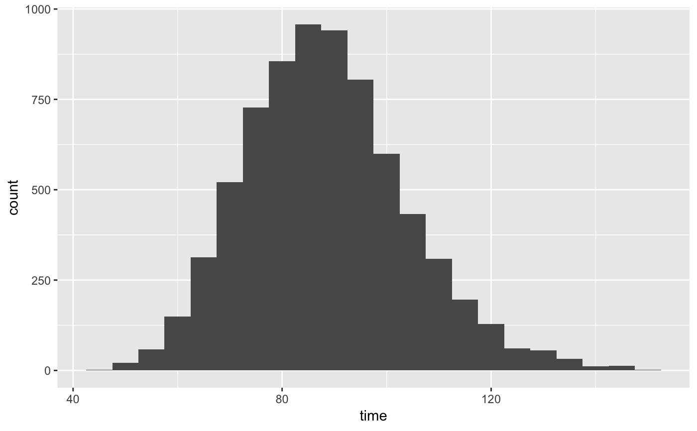
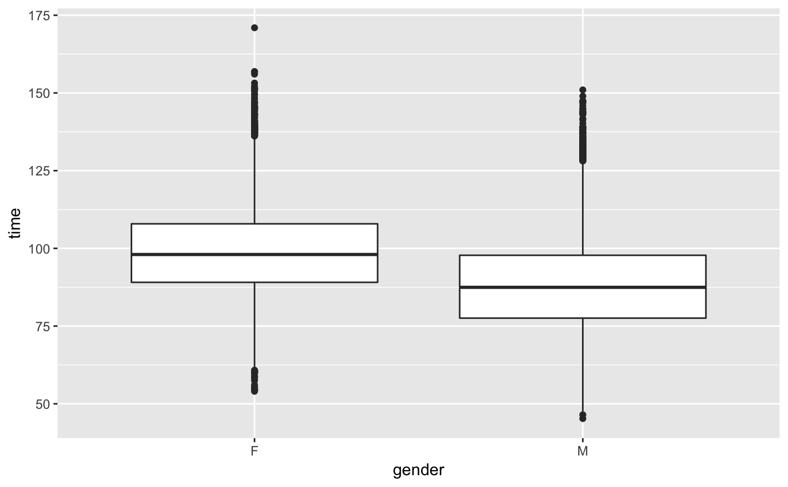

run10.Rd14 variables for all 14,974 10 mile participants in the 2009 Cherry Blossom
Run (run10_09) and 9 variables for all 16,924 participants in 2012.
run10
The run10_09 data frame summarizes 14,974 observations on the
following 14 variables. The run10 (2012 data) summarizes 16,924
observations on 9 variables, which are featured with an asterisk.
Finishing position. Separate positions are provided for each gender.
The total run time. For run10, this is equivalent to net_time.
The run time from the start line to the finish line.
The listed pace for each runner.
Age.
Gender.
First name.
Last name.
Hometown city.
Hometown city. (run10 data only.)
Hometown state. (For run10, this may also list a country.)
Hometown country.
Running division (age group).
Division place, also broken up by gender.
Total number of people in the division (again, also split by gender).
~~ cherryblossom.org ~~
~~ OpenIntro Statistics (openintro.org) ~~
library(ggplot2) library(dplyr) # Men's times run10 %>% filter(gender == "M") %>% ggplot(aes(x = time)) + geom_histogram(binwidth = 5)# Examine sample run10samp#> # A tibble: 100 x 4 #> time age gender state #> * <dbl> <dbl> <fct> <fct> #> 1 88.3 59 M MD #> 2 101. 32 M VA #> 3 110. 33 F VA #> 4 87.1 52 M PA #> 5 73.0 40 M DC #> 6 70.1 42 F MD #> 7 71.1 28 M DC #> 8 129. 32 F DC #> 9 95.2 29 F VA #> 10 97.3 30 M VA #> # … with 90 more rows